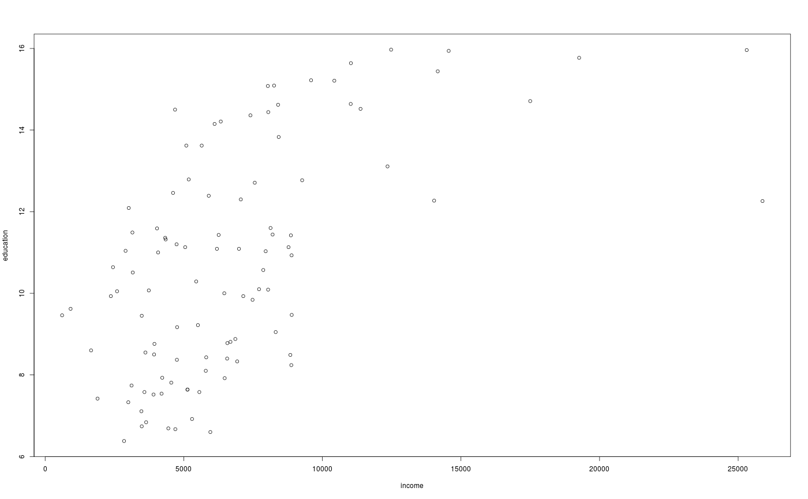
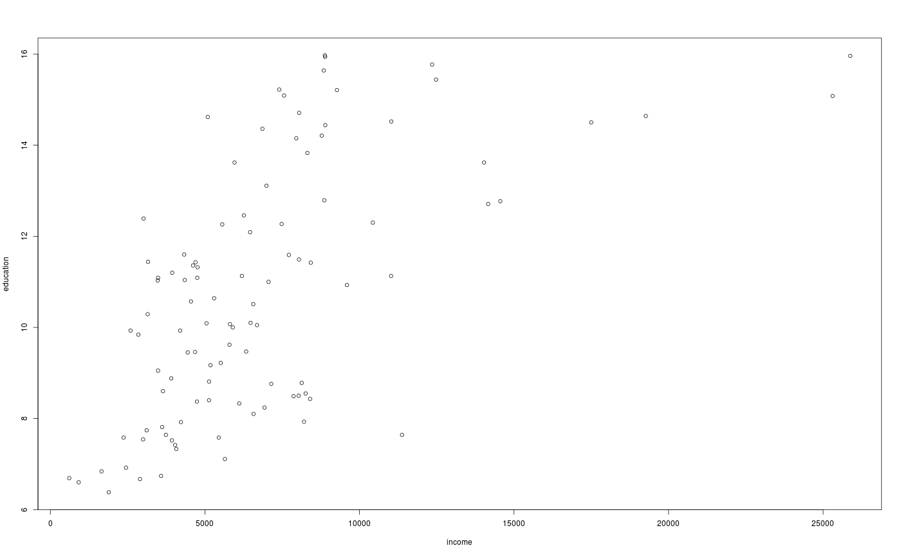

R/shuffle.R
Data shuffling and General Additive Data Perturbation.
shuffle(obj, form, method = "ds", weights = NULL, covmethod = "spearman", regmethod = "lm", gadp = TRUE)
| obj | An object of class sdcMicroObj or a data.frame including the data. |
|---|---|
| form | An object of class “formula” (or one that can be coerced to that class): a symbolic description of the model to be fitted. The responses have to consists of at least two variables of any class and the response variables have to be of class numeric. The response variables belongs to numeric key variables (quasi-identifiers of numeric scale). The predictors are can be distributed in any way (numeric, factor, ordered factor). |
| method | currently either the original form of data shuffling (“ds” - default), “mvn” or “mlm”, see the details section. The last method is in experimental mode and almost untested. |
| weights | Survey sampling weights. Automatically chosen when obj is of
class |
| covmethod | Method for covariance estimation. “spearman”, “pearson” and \ dQuotemcd are possible. For the latter one, the implementation in package robustbase is used. |
| regmethod | Method for multivariate regression. “lm” and “MM” are possible. For method “MM”, the function “rlm” from package MASS is applied. |
| gadp | TRUE, if the egadp results from a fit on the origianl data is returned. |
If ‘obj’ is of class sdcMicroObj-class the corresponding
slots are filled, like manipNumVars, risk and utility. If ‘obj’ is
of class “data.frame” an object of class “micro” with
following entities is returned:
the shuffled numeric key variables
the perturbed (using gadp method) numeric key variables
Perturbed values for the sensitive variables are generated. The sensitive variables have to be stored as responses in the argument ‘form’, which is the usual formula interface for regression models in R.
For method “ds” the EGADP method is applied on the norm inverse percentiles. Shuffling then ranks the original values according to the GADP output. For further details, please see the references.
Method “mvn” uses a simplification and draws from the normal Copulas directly before these draws are shuffled.
Method “mlm” is also a simplification. A linear model is applied the expected values are used as the perturbed values before shuffling is applied.
In this version, the covariance method chosen is used for any covariance and correlation estimations in the whole gadp and shuffling function.
K. Muralidhar, R. Parsa, R. Saranthy (1999). A general additive data perturbation method for database security. Management Science, 45, 1399-1415.
K. Muralidhar, R. Sarathy (2006). Data shuffling - a new masking approach for numerical data. Management Science, 52(5), 658-670, 2006.
M. Templ, B. Meindl. (2008). Robustification of Microdata Masking Methods and the Comparison with Existing Methods, in: Lecture Notes on Computer Science, J. Domingo-Ferrer, Y. Saygin (editors.); Springer, Berlin/Heidelberg, 2008, ISBN: 978-3-540-87470-6, pp. 14-25.
rankSwap, lm
data(Prestige,package="car") form <- formula(income + education ~ women + prestige + type, data=Prestige) sh <- shuffle(obj=Prestige,form)#> Warning: rows with missing values have been imputed!plot(Prestige[,c("income", "education")])plot(sh$sh)colMeans(Prestige[,c("income", "education")])#> income education #> 6797.90196 10.73804colMeans(sh$sh)#> income education #> 6797.90196 10.73804cor(Prestige[,c("income", "education")], method="spearman")#> income education #> income 1.000000 0.573999 #> education 0.573999 1.000000cor(sh$sh, method="spearman")#> income education #> income 1.0000000 0.6280938 #> education 0.6280938 1.0000000## for objects of class sdcMicro: data(testdata2) sdc <- createSdcObj(testdata2, keyVars=c('urbrur','roof','walls','water','electcon','relat','sex'), numVars=c('expend','income','savings'), w='sampling_weight') sdc <- shuffle(sdc, method=c('ds'),regmethod= c('lm'), covmethod=c('spearman'), form=savings+expend ~ urbrur+walls)